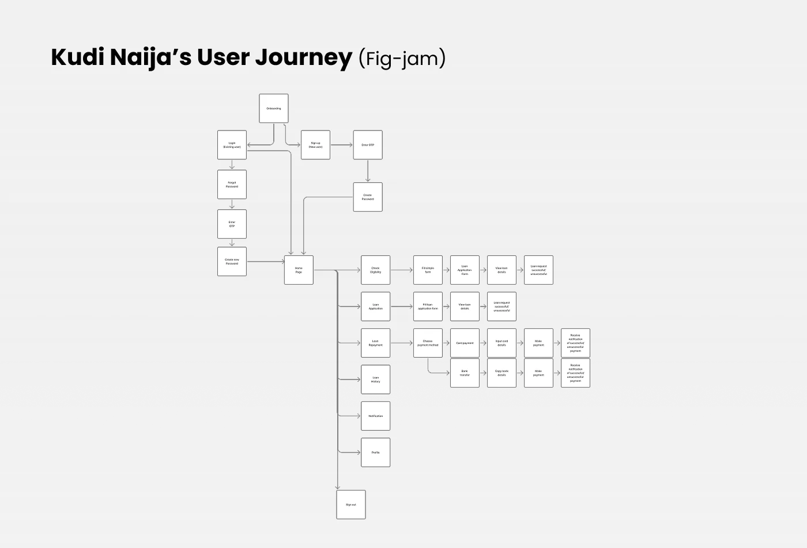
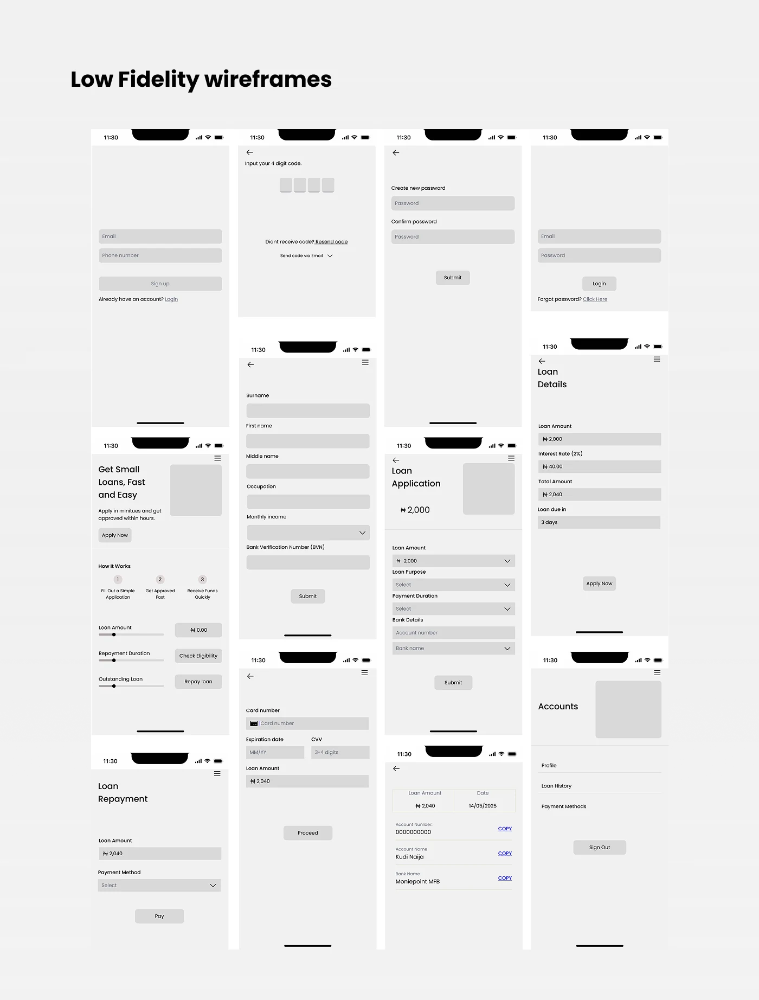
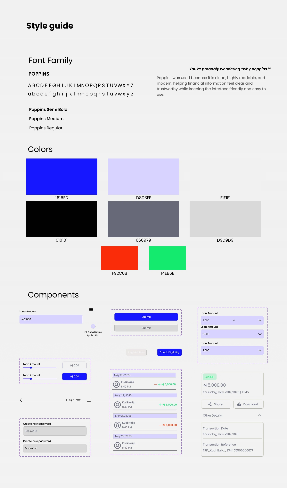
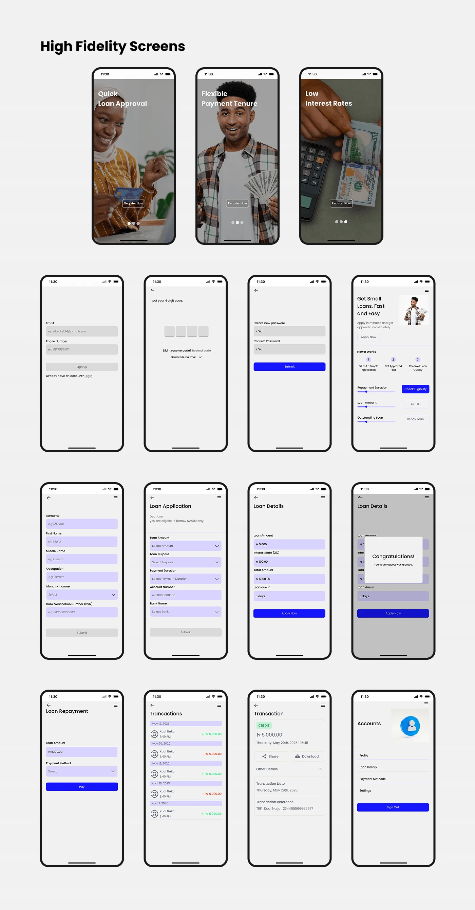

Case study 03 · Fintech · Micro-loan
Kudi Naija
A micro-loan web application
RoleProduct Designer
TimelineOne month, four weeks
FocusBorrowing that is simpler, fairer and more accessible

About Kudi Naija
This product was built to make borrowing simpler, fairer, and more accessible.
It brings together people who need quick financial support and everyday lenders willing to help. By removing the barriers of traditional banking, the platform allows users with little or no credit history to access small loans through a community-powered funding model, creating opportunities, trust, and real-world impact.
The problem
Many people are unable to access small loans because traditional banks have strict requirements and slow processes. This leaves individuals with limited credit or irregular income without reliable financial support when they need it most.
The solution
The solution is a peer-to-peer micro-loan web app that allows users to quickly apply for small loans and receive funding from a community of lenders. Through a simple, transparent interface, users can track their loan status, repayments, and history, making borrowing easier, more accessible, and more trustworthy.
User persona
What people said about borrowing
Design process
One month, broken into weekly deliverables
User journey
From onboarding to repayment

Low fidelity wireframes
Structure before style

Style guide
Why Poppins?
Poppins was used because it is clean, highly readable, and modern, helping financial information feel clear and trustworthy while keeping the interface friendly and easy to use.

High fidelity screens
The full flow

Back to the rest
More work →Have a product that needs figuring out?
Let's talk.
© Lulu 2026 · Designed in Jos, Nigeria.